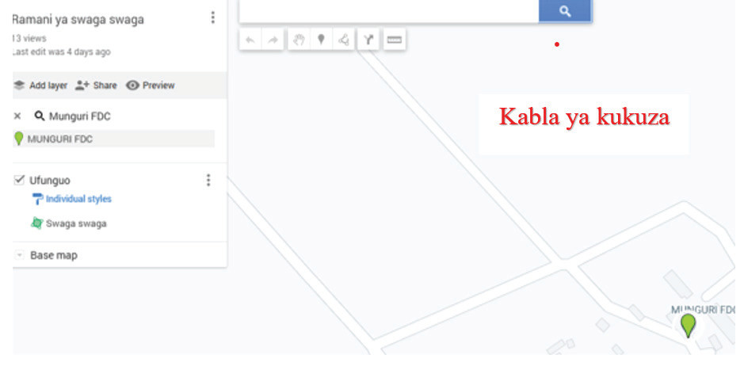

(c)Munguri FDC ikipatikana kwenye “Google My Maps”, ongeza ukubwa kwa kusogeza gurudumu la kipanya nyuma ili kuona Munguri FDC na shule ya msingi Munguri kama inavyowasilishwa kwenye Kielelezo namba 23.Hii itatuongoza njia ya kufuata wakati wa kupima umbali kutoka Munguri FDC hadi shule ya msingi Munguri.

Kabla ya kukuza
(a)